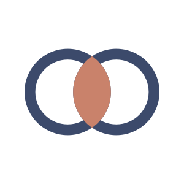

GenreMatch
Genre Analysis Hub · {{date}}
Plan{{plan}}
Primary read
{{genre}}
{{desc}}
{{lede}}
Fit
{{fit}}
of 100 · against the {{center}} centreSource
{{source}}
Family
{{family}}
Beside
{{beside}}
Closest genres
{{genre_name}}{{genre_score}}
What was measured
Tempo{{tempo}}
Energy{{energy}}
Brightness{{brightness}}
Texture{{texture}}
Low end{{low_end}}
Dynamics{{dynamics}}
Pulse{{pulse}}
Why this read
{{why}}
Audience
{{audience}}
Sync
{{sync}}
How to spend the push
{{push}}
{{channels}}
Nearest atlas references
{{ref_title}} — {{ref_artist}}
{{ref_genre}} · {{ref_city}} · {{ref_year}}
{{ref_note}}